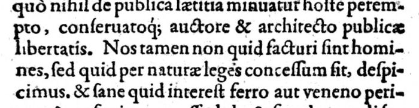

The “consent” of philosophers and theologians (pp. 58–59)
Latin: p. 58, scan (notes 53 and 55). Highlighted: Lecky’s quotations.
… Quorum audaciam quis unquam vituperavit, ac non potius summis laudibus dignam duxit? Et est communis sensus quasi quædam naturæ vox mentibus nostris indita, auribus insonans lex, qua a turpi honestum secernimus. …
Equidem in eo consentire tum philosophos tum Theologos video, eum Principem qui vi & armis rempublicam occupavit, nullo præterea jure, nullo publico civium consensu, perimi a quocumque, vita & principatu spoliari posse. cum hostis publicus sit, malisque omnibus patriam opprimat, vereque & proprie tyranni nomen & ingenium induat: amoveatur quacumque ratione …
… Whoever has ever blamed their daring, and has not rather thought it worthy of the highest praise? And there is a common sense, as it were a voice of nature implanted in our minds, a law sounding in our ears, by which we distinguish the dishonourable from the honourable. …
For my part I see that philosophers and theologians agree on this, that a prince who has seized the state by force and arms, with no right besides and no public consent of the citizens, may be killed by anyone, and deprived of life and rule. Since he is a public enemy, and oppresses his country with every evil, and truly and properly takes on the name and nature of a tyrant, let him be removed by any means …
Note 55 quotes from “In eo consentire” on and stops at “posse”. Lecky omits “Equidem” (the sentence begins “Equidem in eo consentire”); otherwise note 55 follows the print, and note 53’s sentence is exactly as printed.
“Si medicinam respuat” (pp. 59–60)
Latin: pp. 59–60, scan p. 59, scan p. 60 (notes 56 and 57). The omitted text is marked with a row of dots as in Lecky.
Si medicinam respuat, neque spes ulla sanitatis relinquatur, sententia pronunciata licebit reipublicæ ejus imperium detrectare primum. & quoniam bellum necessario concitabitur, ejus defendendi consilia explicare, expedire arma, pecunias in belli sumptus … etsi res feret, neque aliter se respublica tueri possit, eodem defensionis jure ac vero potiori auctoritate & propria, Principem publicum hostem declaratum ferro perimere. Eademque facultas esto cuicumque privato, qui spe impunitatis abjecta, neglecta salute, in conatum juvandi rempublicam ingredi voluerit. Roges quid faciendum, si publici conventus facultas erat sublata … qui votis publicis favens eum perimere tentarit, haudquaquam inique eum fecisse existimabo.
If he refuses the cure, and no hope of health remains, once sentence has been pronounced it will be lawful for the state first to refuse his rule; and since war will necessarily be stirred up, to lay out plans for its defence, to prepare arms, money for the costs of war … and if things so fall out, and the state cannot otherwise protect itself, by the same right of defence, and with a better and its own authority, to kill the prince, declared a public enemy, with the sword. And let the same power belong to any private man who, giving up hope of impunity and disregarding his own safety, shall have chosen to enter on an attempt to help the state. You may ask what is to be done if the opportunity of a public assembly has been taken away … he who, favouring the public wishes, tries to kill him, I shall judge to have done him no wrong.
| Lecky, 1865 (notes 56, 57) | Mainz 1605, pp. 59–60 | |
|---|---|---|
| Opening | Si medicinam respuat princeps, neque spes… | Si medicinam respuat, neque spes… (no “princeps”; the print has “Si me-dicinam respuat”) |
| “and if things so fall out” | Et si res feret | etsi res feret |
| “better authority” | ac vero potiore auctoritate | ac vero potiori auctoritate |
Between “pecunias in belli sumptus” and “etsi res feret” the print has a few more words at the foot of p. 59 and the head of p. 60 (the cropped scan cuts off the ends of p. 59’s lines, so I did not transcribe them); Lecky’s dots stand for them.
On poison (pp. 66–67)
Latin: p. 66 (scan) to p. 67 (scan) (note 60, second sentence).
… Et est naturæ vox communis hominum sensus vituperantium si quis in alios quantumvis hostes veneno grassetur. …
… And it is a voice of nature, the common feeling of men, which blames anyone who attacks others, however much enemies, with poison. …
“Nos tamen non quid facturi sint homines” (p. 65)
Latin: foot of p. 65, scan (note 60, first sentence). Found in October 2026 by a full-text search of the OCR by a second language model (Meta’s Muse Spark), then read on the page image; an earlier check had looked only at p. 66, where a different sentence also begins “Nos tamen”.

… quo nihil de publica lætitia minuatur hoste perempto, conservatoque auctore et architecto publicæ libertatis. Nos tamen non quid facturi sint homines, sed quid per naturæ leges concessum sit, despicimus. Et sane quid interest ferro aut veneno perimas? præsertim concessa dolo et fraude agendi facultate.
… so that nothing is taken from the public rejoicing when the enemy is killed and the author and architect of public liberty is preserved. We, however, consider not what men are going to do, but what is permitted by the laws of nature. And indeed what difference does it make whether you kill with steel or with poison, especially when leave has been granted to act by guile and deceit?
Lecky’s Latin matches the print word for word. The sentence comes before the passage on pp. 66–67, where Mariana goes on to reject poisoning in food or drink; Lecky’s dots cover more than a page. On p. 66 a second sentence begins “Nos tamen de nostris moribus sublatum videmus …” (poison as a judicial punishment, abandoned in Christian times); that one is not Lecky’s.
Backlinks
Every place in Rationalism in Europe that links to this page (generated automatically when the site is built).